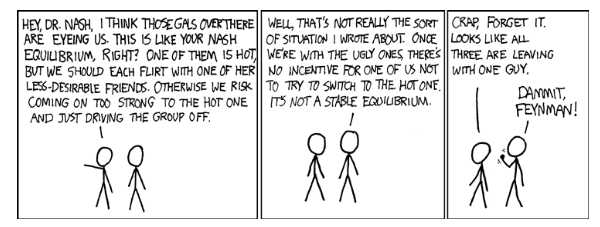

The Skill Gap in Data Science
![]()
As we celebrate Labour Day on 1st May 2023, it’s important to reflect on the changing nature of work and the skills required to succeed in the modern workplace. One area where the skill gap is particularly acute is data science. With the exponential growth of data in recent years, the demand for data scientists has skyrocketed. However, universities have struggled to keep up with the pace of change, leaving many graduates ill-equipped for the demands of the job market.

Universities have been slow to respond to the growing demand for data scientists, with many struggling to keep up with the rapid pace of change. However, some institutions have taken steps to bridge the gap. In Tanzania, the skill gap in data science is particularly acute. Only one institution, the University of Dar es Salaam (UDSM), offers a data science course at the master’s level. This has left many graduates without the skills required by employers, hindering economic development in the country.
For example, many universities have introduced data science courses at both undergraduate and postgraduate levels. These courses typically cover a range of topics, including statistics, machine learning, and programming languages such as Python and R. However, while these courses are a step in the right direction, they often fall short of the skills required by employers. Many students graduate with a theoretical understanding of data science but lack practical experience in applying these skills to real-world problems.
Blogs and websites have played a crucial role in bridging the skill gap in data science. These platforms provide a wealth of resources for aspiring data scientists, including tutorials, case studies, and discussions on the latest trends in the field.
One example of a website that has helped to overcome the challenge is Kaggle1. Kaggle is a popular online platform for data scientists and machine learning enthusiasts. The platform hosts a variety of competitions and challenges related to data science, providing a platform for professionals and enthusiasts to showcase their skills and collaborate on complex problems. The platform also provides a wealth of datasets for users to explore, analyze, and visualize. The community is known for its highly collaborative and supportive nature, with users sharing code, insights, and feedback to help each other improve their skills.
There are several online platforms similar to Kaggle, each offering their own unique features and community. One such platform is DrivenData2, which hosts data science competitions with a focus on social impact. DrivenData’s challenges tackle real-world problems related to healthcare, poverty, and education, providing a platform for data scientists to contribute to society while improving their skills.
DataCamp3 is also a platform that offers a variety of courses and challenges related to data science and machine learning. The platform provides interactive coding environments and personalized learning paths, making it a valuable resource for anyone looking to learn or upskill in the field.
In conclusion, the skill gap in data science is a significant challenge facing both individuals and economies around the world. While universities have taken steps to bridge the gap, more needs to be done to ensure that graduates are equipped with the skills required by employers. Blogs and websites have played a crucial role in providing aspiring data scientists with practical experience and resources to develop their skills. Tanzania’s example shows that partnerships between universities and industry leaders can help to overcome the challenge and drive economic growth.